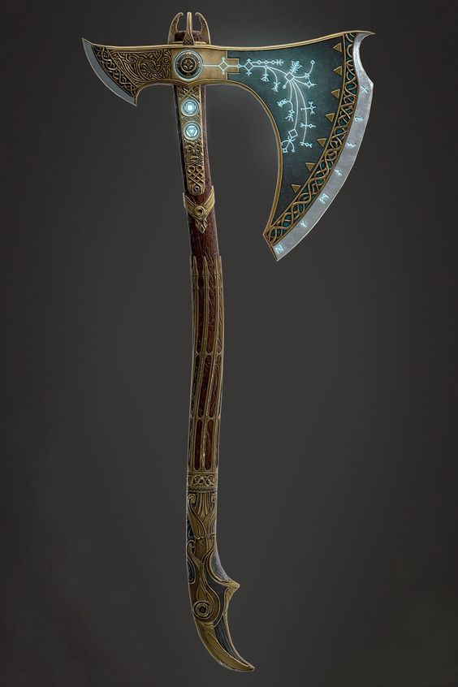
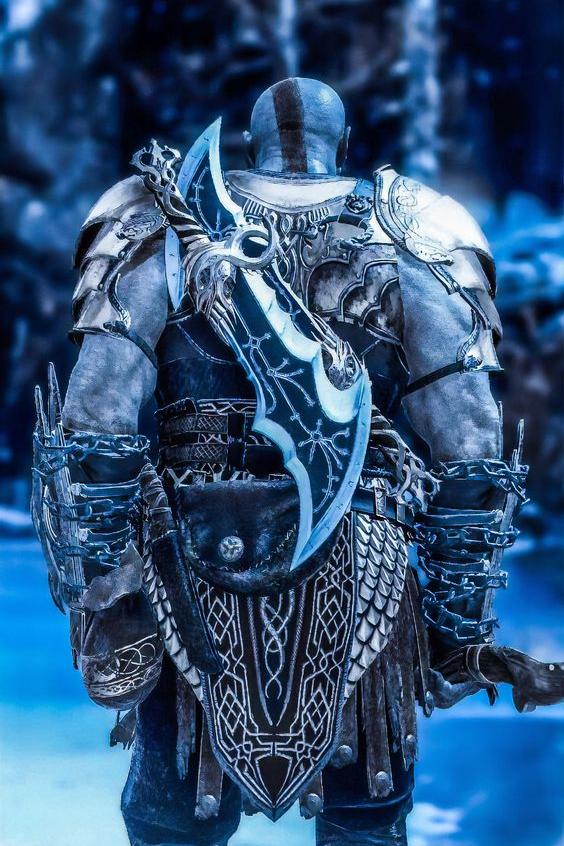

As Principais Armas do Kratos em God of War: Ragnarök

Machado Leviatan
Leviathan foi forjado pelos irmãos Brok e Sindri durante a guerra dos Aesir para restaurar o equilíbrio entre os reinos. Além disso, a dupla também foi responsável por outros artefatos como o anel dourado de Odin, o martelo de Thor, o porco dourado de Freya. Isso mostra que a arma vai ser um fator importante durante o jogo.
